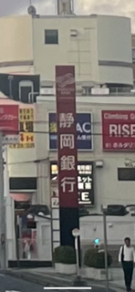
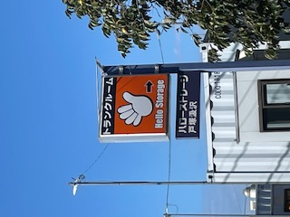
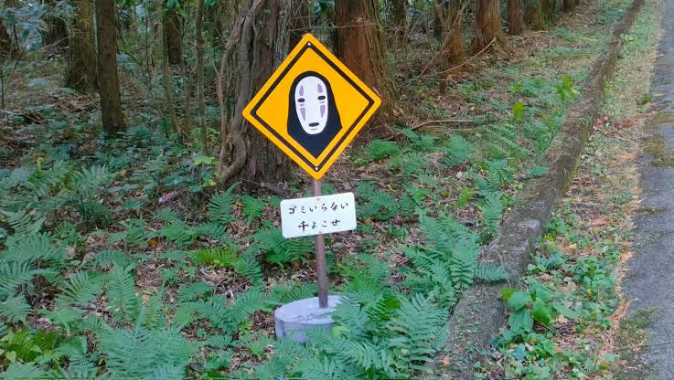

10月の10日 戸塚駅近くの交差点にて私が撮影
ここは神奈川県横浜市の戸塚区である。
そう、神奈川県なのである。
なぜに静岡銀行？
もしかしたら割と普通であって私が無知なだけかもしれないが、
純粋に疑問に思ったので撮影した。
10月13日 横浜市戸塚区戸塚町 私が撮影
手の形、色、ハローなど
有名なネズミの顔が頭に浮かんで来ました。

10月１９日 静岡県富士宮市 撮影した写真があまりにもぶれがひどかった
ため、ネットから同じものを引用
山道を車で走っていると個人的に思い出したくもなかった顔がそこにはあった。
絶対にゴミなんて捨てないからどうか追いかけてこないでほしい
どうか普通の標識にしてほしい
夜中に見たら怖いなんてものじゃ済まないから。
